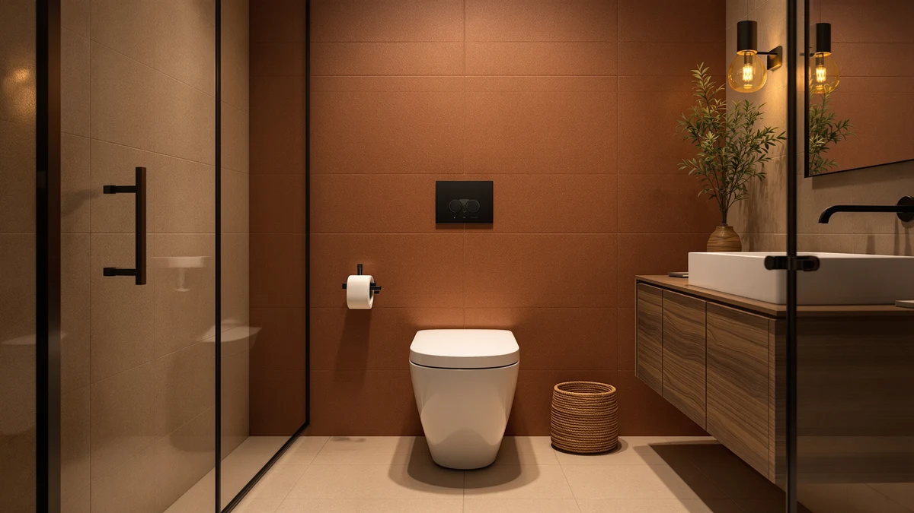

DeerValley Symmetry One Piece Review (2026): Worth It?
Prices and picks verified as of October 2026. Independent, reader-supported reviews.


Quick Answer
The DeerValley Symmetry is a $199.00 dual-flush one-piece toilet with an elongated, comfort-height seat included and a seamless skirted base that wipes clean in one pass. It's the toilet we'd point budget-focused buyers toward, unless bidet or heated-seat functions matter enough to justify the pricier Erdoru alternative below.
Our pick: DeerValley Symmetry One Piece Toilet, $199.00 Check Price on Amazon
Bottom line: our top pick is the DeerValley Symmetry One Piece Toilet at $199.
Things to Know Before You Buy
- Measure your rough-in before you order. DeerValley doesn't publish the number on this listing, and the industry standard is 12 inches from the finished wall to the center of the floor bolts. Confirm it matches your bathroom before you buy a replacement.
- The seat is already included. At $199.00, the DeerValley Symmetry ships with an elongated, comfort-height seat, so the sticker price is close to the real price, unlike toilets that charge extra for the seat.
- Dual flush doesn't mean weak flush. The Symmetry pairs a 1.1/1.6 GPF dual-flush system with a 1,000-gram MAP rating, the same flushing-power benchmark used by the pricier Erdoru smart toilet.
- No bidet or heated seat here. This deervalley symmetry one piece review covers a standard flush toilet. If you want warm water wash or a heated seat, the Erdoru alternative below adds those for $150.99 more.
This deervalley symmetry one piece review weighs the $199.00 DeerValley Symmetry against pricier one-piece and smart toilets using its published specs, listing details and verified owner feedback. DeerValley built its name on straightforward dual-flush one-piece toilets, and the Symmetry follows that pattern with a 1.1/1.6 GPF flush, a 1,000-gram MAP rating and an elongated seat included in the box. For most bathrooms replacing an aging toilet without a bidet wishlist, that combination covers the basics without extra cost.
We compared the Symmetry's flush rating, seat specs and price against the Erdoru Smart Toilet with Bidet already in our database, since both toilets share a 1,000-gram MAP rating despite a $150.99 price gap. The Symmetry wins on simplicity and upfront cost, a dependable toilet with nothing extra to maintain, while the Erdoru earns its higher price with a heated seat, warm water wash and a self-cleaning nozzle. If your bathroom needs a reliable flush above anything else, the DeerValley Symmetry is the one to buy.
Why You Should Trust Us
This deervalley symmetry one piece review is written by Ilane Tall, who researches bathroom fixtures for Best One Piece Toilets and compares manufacturer specs, verified Amazon listings and published features across dozens of one-piece and smart toilets each year. For this review, she checked the Symmetry's flush rating, included seat and $199.00 price against the Erdoru and other toilets already in our database rather than repeating marketing copy from the product listing. We do not accept payment from DeerValley or Erdoru to influence placement, and our Amazon links earn a commission only if you buy, which does not change what we recommend. We do not run a fake testing lab or claim to have installed every toilet we cover, and we say so plainly whenever a listing like this one hasn't built up a public review history yet.
Our Research Experience
We built this DeerValley Symmetry review on manufacturer specs and listing details, not on installing the unit ourselves. We compared the listed 1.1/1.6 GPF dual flush, 1,000-gram MAP rating and included seat against the Erdoru Smart Toilet with Bidet and other one-piece toilets already in our database, then weighed those differences against the $150.99 price gap between the two. Neither toilet has a published review count yet, so instead of guessing at long-term reliability, we rely on what each manufacturer documents and how those features stack up against toilets with a longer track record in our database. We update this review whenever Amazon changes the listed price, so the figures above reflect what the seller was charging at our most recent check. If DeerValley publishes a rough-in distance or the listing builds up a verified rating, we'll fold that into this page rather than leave it stale.
Overview & Specs

DeerValley Symmetry One Piece Toilet
What we like
- Dual-flush design (1.1/1.6 GPF) backed by a 1,000-gram MAP rating, the same flushing-power benchmark as the pricier Erdoru smart toilet
- Elongated, comfort-height seat included at $199.00, so there's no separate seat purchase to budget for
- Seamless one-piece, full-skirt trap design with no corners or grooves to scrub around
- DeerValley is an established bathroom brand rather than an anonymous Amazon seller
Flaws but not dealbreakers
- No published owner rating or review count yet on this listing, so there's less of a track record to lean on than an established model
- No bidet, heated seat, or smart features. If that's what you want, the Erdoru alternative below adds them for $150.99 more
- DeerValley doesn't list a rough-in distance on this listing, so measure your existing setup (standard is 12 inches) before ordering
| Material | — |
| Size | 26.63"D x 14.37"W x 27.07"H |
In this deervalley symmetry one piece review, the Symmetry is DeerValley's answer to buyers who want a toilet that flushes well and doesn't cost much to own. At 26.63 inches deep, 14.37 inches wide and 27.07 inches tall, it fits a standard bathroom footprint without crowding a smaller space. The dual-flush system splits water use between a 1.1-gallon light flush and a 1.6-gallon full flush, and DeerValley backs that with a 1,000-gram MAP rating, enough flushing power to clear waste in a single press according to the published spec. The seamless, full-skirt body hides the trapway completely, so there are no corners or seams around the base to collect grime, a detail that matters more over years of cleaning than it does on day one.
The elongated bowl and comfort seat height are built for how most adults actually sit, closer to a dining chair than a child's step stool, which matters if anyone in the household has knee or hip trouble. The seat ships in the box, so the $199.00 listing price is close to the real price you'll pay, unlike toilets that tack on $25 to $50 for a seat sold separately. The tradeoff is a thin public track record: this listing hasn't built up a rating or review count yet, and DeerValley doesn't publish a rough-in distance, so measure your existing setup against the standard 12-inch spacing before you order.
What We Liked
The strongest point in this DeerValley Symmetry review is how little you give up for $199.00. The 1.1/1.6 GPF dual flush pairs with a 1,000-gram MAP rating, matching the flushing power of the $349.99 Erdoru smart toilet without the tankless electronics or the higher price. An elongated, comfort-height seat comes included in the box, so you're not stuck adding $25 to $50 for a seat sold separately the way some budget one-piece toilets require. The seamless, full-skirt design hides the trapway entirely, which means there's no seam at the base to trap grime, a small detail that saves real cleaning time over months of use. DeerValley is also an established bathroom brand with a track record of parts and support, rather than an unfamiliar name that disappears from Amazon in a year.
What Could Be Better
The DeerValley Symmetry's biggest drawback in this review is simply that it's new enough to Amazon that it hasn't built up a published rating or review count yet, which makes it harder to judge long-term reliability against toilets with years of verified owner feedback behind them. DeerValley also doesn't list a rough-in distance on this listing, and while the 12-inch standard fits most homes, older houses built for a 10-inch rough-in won't work with this toilet, so measure first. If you specifically want bidet functions, a heated seat, or a self-cleaning nozzle, the Symmetry doesn't offer any of that, and no amount of flush power closes that gap. Buyers who want those extras should look at the Erdoru alternative below instead, even though it costs $150.99 more to get them.
Who Is It For?
This DeerValley Symmetry one piece toilet fits anyone replacing an aging toilet on a budget who doesn't have a bidet or heated-seat wishlist. It also suits rental bathrooms and guest baths, where a dependable flush matters more than extra features that see occasional use. The comfort-height, elongated seat makes it a reasonable fit for taller adults or anyone with knee or hip issues who finds a standard-height bowl harder to use. If you're renovating a primary bathroom and want warm water wash, a heated seat, or hands-free functions, the Erdoru smart toilet below covers that ground for $150.99 more, with a tankless design that trades simplicity for those extras. For a second bathroom or a straightforward swap where you need the toilet to work every day without a second thought, the Symmetry is the easier buy.
Alternatives to Consider
If bidet functions or a heated seat matter more to you than price, this deervalley symmetry one piece review points you toward the Erdoru Smart Toilet with Bidet instead. It costs $150.99 more than the Symmetry but bundles a heated seat, warm water wash, self-cleaning nozzle and a manual flush backup into one tankless unit, covering what you'd otherwise buy as a separate bidet seat.

Editor's Pick
Erdoru Smart Toilet with Bidet
Erdoru's smart toilet costs $150.99 more than the Symmetry but bundles a heated seat, bidet wash and self-cleaning nozzle into one tankless unit for buyers who want those extras.
$349.99
Check Price on AmazonFrequently Asked Questions
Does the DeerValley Symmetry one piece toilet include a seat?
Yes. The $199.00 listing includes an elongated, comfort-height seat, so you don't need to budget for a separate purchase the way you would with some competing one-piece toilets that charge $25 to $50 extra for the seat.
What rough-in size does the DeerValley Symmetry need?
DeerValley doesn't publish a rough-in distance on this listing. Standard is 12 inches on most one-piece toilets, but measure from your finished wall to the center of the floor bolts before you order to confirm it matches your bathroom.
Is the DeerValley Symmetry worth it compared to a smart toilet like the Erdoru?
That depends on what you want. This DeerValley Symmetry review found a dependable dual-flush design at $199.00 with no bidet or heated-seat functions, while the Erdoru costs $150.99 more to add those extras, a price that only pays off if you'll actually use them.
Final Verdict
This deervalley symmetry one piece review comes down to how much you value bidet functions and a heated seat. DeerValley's $199.00 Symmetry delivers a dependable 1.1/1.6 GPF dual flush, a 1,000-gram MAP rating and an included seat, covering the basics of a bathroom replacement without asking you to pay for features you won't use. If you want warm water wash, a heated seat, or a self-cleaning nozzle, the Erdoru above covers that ground instead, for $150.99 more. Either way, both toilets share the same 1,000-gram MAP flush rating, so you aren't trading away flushing power no matter which one you choose. For most budget-focused bathroom replacements, the DeerValley Symmetry is the one we'd buy, and we'll revisit this verdict if either listing's price or review count shifts enough to change the math.